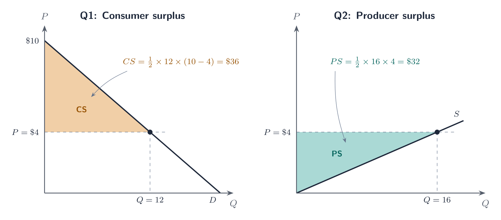
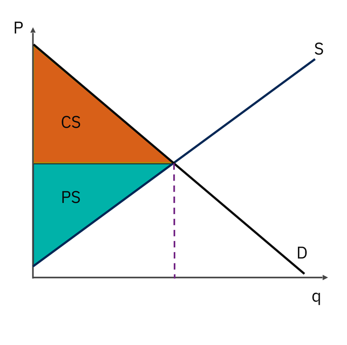
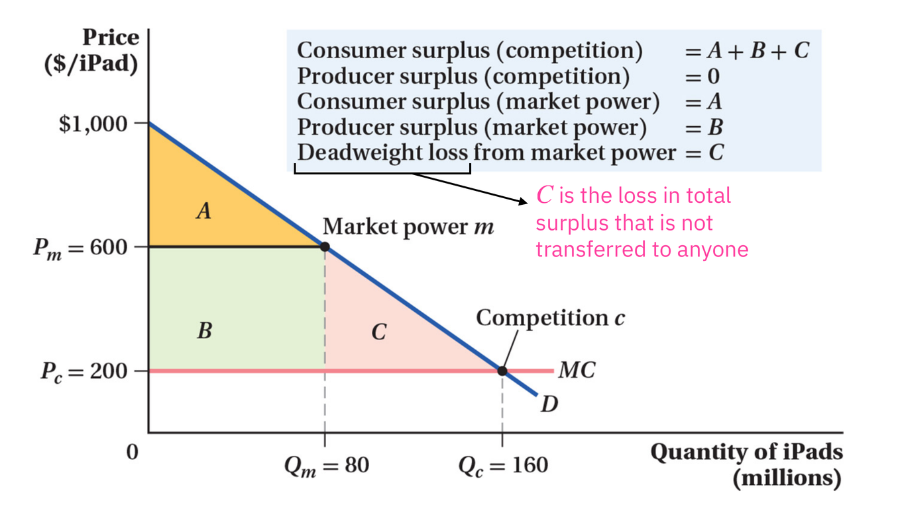
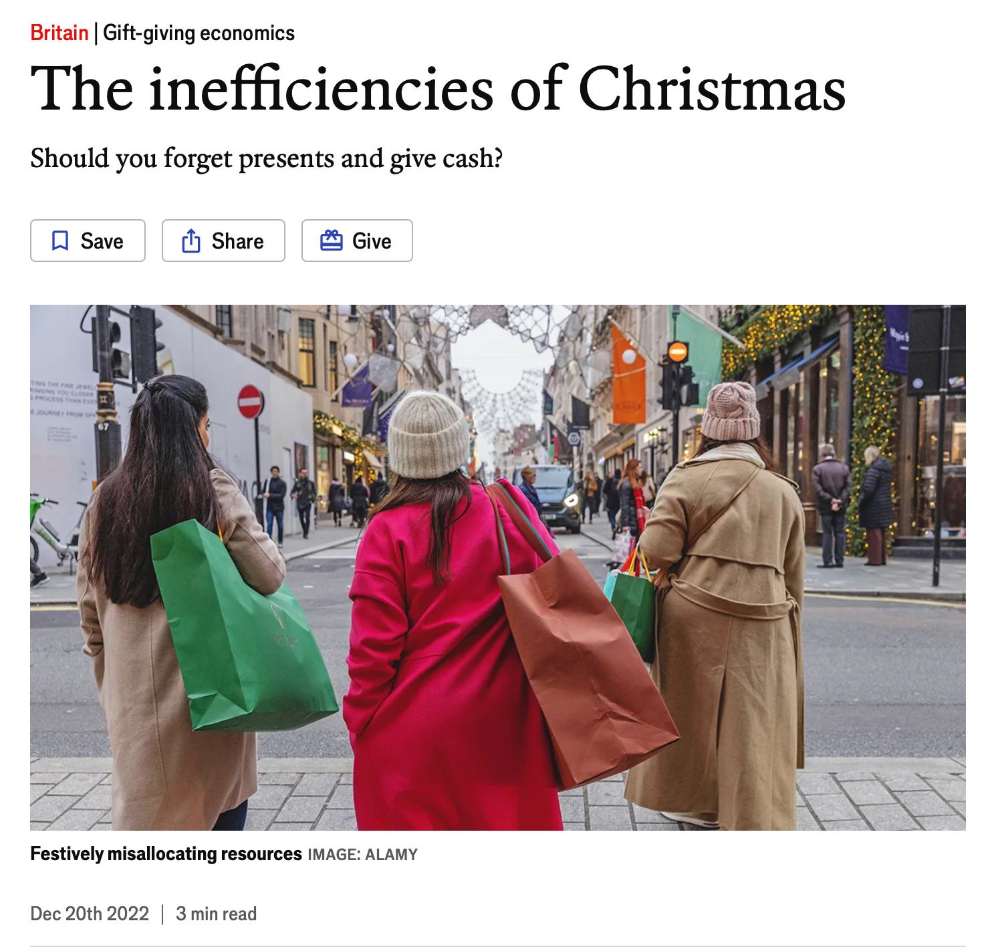
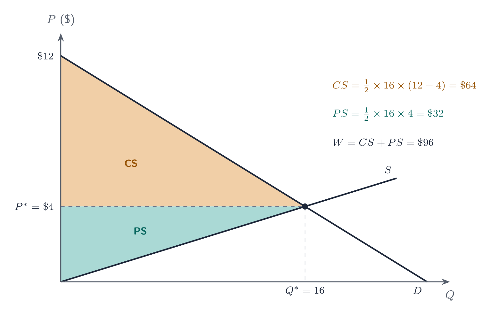
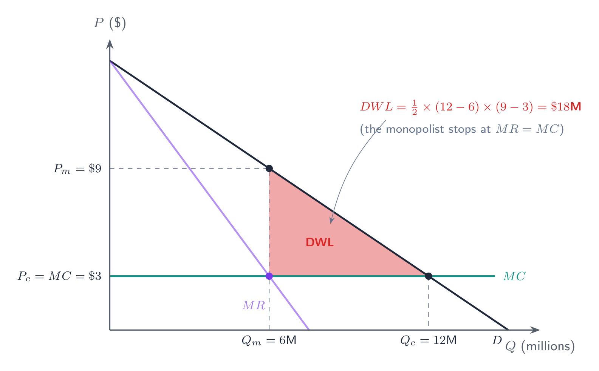

RSC Economics Experience · July 2026
Meng Hsuan “Rex” Hsieh
Press → to begin
Agenda for Today
Classes 3–4 Recap
A quick walk back through monopoly pricing, perfect competition, and long-run equilibria. Press ↓
Recap · Monopoly Pricing
Recap · Monopoly Pricing
Recap · Perfect Competition
In perfect competition, each firm takes the market price as given, so its marginal revenue is just that price:
This is the key contrast with a monopolist, who faces the whole downward-sloping market demand alone.
Recap · Perfect Competition
The firm produces where \( P = MC \). Trace the price up and down the \( MC \) curve:
Supply curve \( = \) the \( MC \) curve above \( e_1 \) (min \( AVC \)). (\( AC = ATC \))
Recap · Long-Run Equilibria
Recap · Long-Run Equilibria
Entry keeps pushing the price down until the firm’s flat demand is tangent to the bottom of its \( ATC \). So the long-run price must be \( P^* = \min(ATC) \) — exactly where \( MC \) crosses the minimum of \( ATC \) (point \( e_2 \) on Group 1’s cost curves), where every firm earns zero profit.
Perfect Competition
Rex’s Ties, the road to the long run, and a price-taker group problem. Press ↓
Perfect Competition · Worked Problem
Perfect Competition · Solution (a)
Perfect Competition · Solution (b)
Perfect Competition · Solution (c)
Rex’s Ties · Short Run → Long Run
Short-run profit attracts entry; market (right) supply shifts right, so the price falls until it reaches \( \min(ATC) \) and the firm (left) earns zero profit. Press →.
Perfect Competition · Conclusion
Why do I care about knowing the market structure, i.e. how many competitors there are?
Economists’ answer: market structure has direct implications for how well-off people and firms are.
Group Work · Perfect Competition
Group Work · Answers
Entry grows the market from 10 to 15 firms as the price falls \(\$24 \to \$20\) and profit → 0.
Part 1
Press ↓ to continue
Market Structure · Recap
| Characteristic | Perfect Competition | Monopoly |
|---|---|---|
| Number of Sellers | Very large number | One firm |
| Entry Conditions | Easy entry | Barriers to entry |
| Price Setting Ability | None (“price taker”) | Some (“price maker”) |
| Price Elasticity of Demand — Firm Level | Perfectly elastic | Same as market elasticity of demand |
| Long-Run Profit | Zero economic profit | Potentially positive |
| Product Differentiation | Standardized product | Unique product with no close substitutes |
| Key Characteristic | Firms are price takers | One firm |
| Examples | Tomatoes, copper, lumber | Patented medicine, first-class mail, electricity delivery |
Surplus · Consumer
How do we measure consumer well-being?
Surplus · Consumer
Let's look at this concept graphically on the next slide!
Surplus · Warm-Up
Surplus · Consumer
Graphical Representation:
Surplus · Consumer
Compare two straight demand curves through the same price and quantity, using the same units.
The steeper curve has a higher willingness to pay for earlier units, so its consumer surplus triangle is larger.
Elasticity at a single point does not determine total consumer surplus for an arbitrary demand curve.
Surplus · Consumer
Same market price \( P^* \) and quantity \( Q^* \) in both panels — only the slope of demand differs. Press →.
Surplus · Practice
Surplus · Solution
Surplus · Producer
If revenue is $100, variable cost is $60, and fixed cost is $30, what are PS and profit?
Surplus · Warm-Up
Surplus · Practice
Surplus · Solution
Rectangle + triangle: PS = (10 × $5) + ½(25 × $5) = $112.50.
Surplus · Market Level
Surplus · Solution
Group Work · Surplus
Group Work · Answers
Supply starts at the origin (\( Q = 0 \) at \( P = 0 \)), so PS is the triangle above supply and below \( P = 4 \):
\[ PS = \frac{1}{2} \times 16 \times 4 = \$32 \]Group Work · Answers
Press → to add each element of the graph
Group Work · Answers

Part 2
Press ↓ to continue
Welfare · Definition

Welfare · Deadweight Loss
In this monopoly example, output is below the efficient quantity:

Welfare · Deadweight Loss
Underproduction misses units whose social marginal benefit exceeds social marginal cost. Overproduction adds units whose social cost exceeds their benefit.
A real cost increase can reduce surplus even when the new allocation is efficient.
Welfare · Market Power
Recall Monopoly Pricing:
Welfare · Market Power
The same graph, now with marginal revenue: the monopolist produces where \( MR = MC \), then charges what demand will bear. Press →.
Welfare · Practice
Welfare · Solution
DWL = $16 billion — surplus lost to society, transferred to no one.
Welfare · Deadweight Loss
A buyer pays $2 more and a seller receives $2 more, with quantity and real costs unchanged.
Welfare · Deadweight Loss
Could a gift be worth less than its purchase price yet still improve well-being? Consider sentimental value and the giver’s enjoyment.

Welfare · Shocks
Welfare · Solution
Welfare · Solution (graph)
Higher real costs shift supply up. Compare the old and new efficient outcomes. Press →.
Price rises and quantity falls. Total surplus is lower, but the new equilibrium has no DWL relative to the new costs.
Welfare · Interventions
Aside from market power (monopolies), what else alters the competitive equilibrium?
We analyze these interventions in detail next class.
Group Work · Welfare
Group Work · Answers
Surplus lost to society — transferred to no one. Let’s see both questions graphically ↓
Group Work · Answers
Press → to add each element of the graph
Group Work · Answers

Group Work · Answers
Press → to add each element of the graph
Group Work · Answers

Schedule
Please stay on top of everything!
See you next class (9am sharp)!
Come to office hours w/ any questions or concerns.
Thank you!